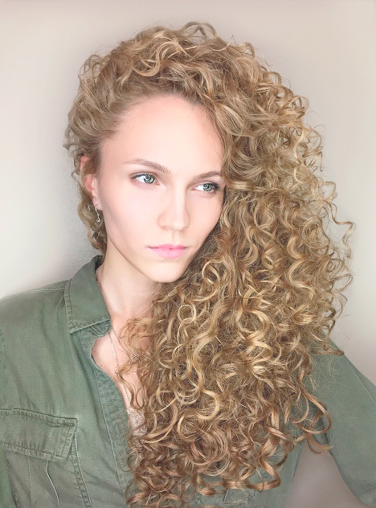

Раньше была мода на химическую завивку. Она служила каркасом для прически, потому что подсушивала волосы. Вследствие чего женщины могли делать себе укладку на брашинг либо на бигуди, и эта укладка держалась и 3 дня, и неделю. От мытья до мытья. В этом крылась причина её популярности.
Со временем, на смену химической завивке пришел Boost Up, то есть прикорневая химическая завивка. Кудряшки делали только на прикорневой зоне. Эта процедура так же подсушивает волосы в зависимости от применяемого состава.В современном мире составы для завивки и Boost Up уже более мягкие и волосы так не портят.
Что хуже химическая завивка или выпрямление?
Особенности процедуры
В настоящее время такого вопроса уже не стоит. И завивка – это хорошо, и выпрямление. Многое зависит от состава препарата и мастера, выполняющего данную процедуру, соблюдающего технологию и пожеланий клиента.
Во времена наших мам химическая завивка делалась навсегда, то есть после неё волосы очень портились и обрезались.
Карвинг – это современная процедура, временная завивка, легкие кудри. Представляет собой долговременную укладку сроком на три - шесть месяцев в зависимости от волос и применяемого состава.
Я хорошо отношусь к этой процедуре, потому что она, на самом деле, спасает многих девушек. Дает возможность помыть голову, быстро подсушить волосы диффузором и получить пышную прическу. Это очень удобно.
Морозова Юлия. Топ стилист
Если стилист использует хороший состав, который подошел волосам, то волосы эта процедура не испортит.
Прежде чем сделать какую-либо процедуру, будь то завивка, выпрямление или карвинг, нужно прийти на консультацию к мастеру, чтобы он провел диагностику волос и подобрал состав, тогда не будет никакого плачевного результата, не будет ужасных химических ожогов на волосах и коже головы. Волосы не нужно будет отрезать.
До

После
Для блондинок существуют специальные составы для выпрямления и карвинга.
Составы делятся следующим образом:
для жестких волос;
для тонких волос;
для окрашенных волос.
Это очень важно учитывать, так как если, например, выполнить процедуру составом для жестких волос на осветленных волосах, то они запросто могут отвалиться.
для жестких волос;
для тонких волос;
для окрашенных волос.
Доверьте себя профессионалу, и любая процедура будет проведена безопасно для ваших волос.
Результат продолжит радовать вас длительное время!!!